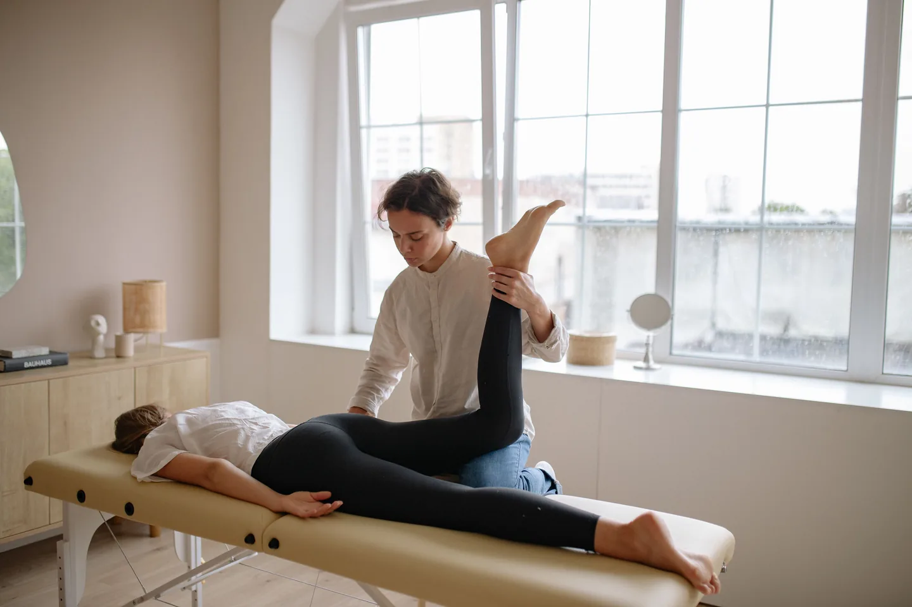

Fisioterapia
Recuperar, tratar y volver a funcionar mejor
No hace falta llegar con un diagnóstico cerrado: la primera visita sirve para valorar tu dolor, lesión o limitación y decidir juntos cómo tratarlo.
Primera visita de 60 minutos · En clínica o a domicilio · Necesaria antes de los seguimientos

Cuándo empezar por Fisioterapia
El primer paso es entender qué está limitando tu día a día
Antes de tratar, hacemos una valoración inicial: qué te duele, cómo te limita y qué esperas conseguir. Es el punto de partida para todo el mundo, sea cual sea tu caso, y a partir de ahí el proceso puede combinar tratamiento, movimiento, ejercicios y recomendaciones según lo que necesites.

Problemas y ámbitos que abordamos
Ámbitos de fisioterapia
Ámbitos en los que podemos ayudarte
Todas parten del mismo proceso: entender tu punto de partida, adaptar el tratamiento y ayudarte a avanzar con un objetivo claro.
-
01
Fisioterapia general
Valoración y tratamiento del dolor o la limitación funcional en el día a día.
-
02
Fisioterapia traumatológica
Recuperación tras lesión, cirugía o proceso musculoesquelético.
-
03
Fisioterapia neurológica
Trabajo de movimiento y función en procesos de origen neurológico.
-
04
Fisioterapia oncológica
Acompañamiento fisioterapéutico durante o después de un proceso oncológico.
-
05
Suelo pélvico
Valoración y tratamiento específico de la musculatura del suelo pélvico.
-
06
Fisioterapia dermatofuncional
Tratamiento fisioterapéutico orientado a piel y tejido conectivo.
Relación entre áreas
La fisioterapia puede ser el punto de partida. Según tu situación y evolución, el proceso puede continuar con trabajo de bienestar, fuerza o Pilates Reformer para recuperar movimiento, ganar capacidad y mantener los avances.
Ver todas las áreas →Cómo es el proceso
Cinco pasos, desde la primera visita
- Escuchamos qué te preocupa y tu situación actual.
- Realizamos una valoración inicial.
- Definimos contigo el objetivo del tratamiento.
- Empezamos la intervención cuando es adecuado.
- Te llevas recomendaciones y los siguientes pasos.
Una modalidad de Fisioterapia
Fisioterapia a domicilio
Si no puedes desplazarte al centro, puedes realizar tu proceso de fisioterapia a domicilio, con el mismo seguimiento.
Reseñas de Google
Experiencias reales de quienes han confiado en Physio Wellness
Tu siguiente paso empieza por entender tu caso
Si tienes dolor, una lesión o no sabes por dónde empezar, la primera visita es el punto de partida.